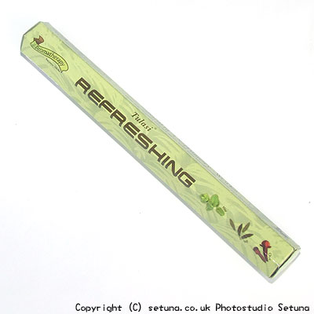

ミント、クローブ、セージの入ったお香です。
火を点けずに直接嗅ぐと上記の香りがそのまま匂うのですが、焚き始めてみると、三つの香油の香りが喧嘩する様な感じで若干煙臭いです。
ミントと、セージが一緒になり、青臭さの混じった様な煙っぽさが感じられます。
部屋の下層から中層域にかけてクローブとセージの混ざった薬の様な臭みを感じとってしまいます。
ハーバル系のはずなのですが、爽やかさとはちょっとかけ離れていると言っても過言ではない様な気がします。
これを解消し、ミントやセージの爽やかさと、クローブの独特の甘みを感じ取る為に使うのは、「HEM社のハヌマーン香」です。
リフレッシングはあまり隙のないタイプのお香ですので混ぜるという感じにはなりますが、一緒に焚いてみましょう。
２つ同時に火を点け、あまり待たないうちにミントの爽やかな香りがふわりと香ります。
もうこの時点で結構いい感じです。
続いてセージとクローブの薬臭さは薄れ、薄いバニラの様な香りに変化します。
空気まで薄いミントカラーになってくるような・・・
全体的に優しく爽やかな香りが部屋を満たし始めます。まるで、フルーツミントガム?のようなさわやかさ。
心が穏やかになってくるような気がします。
香りはかるく、ふんわりと部屋全体に広がってゆきます。煙臭さは感じられません。
焚き終わりは、ミントっぽい香りを残しながら消えてゆきます。
残り香はかすかですが部屋を閉めておくとかなり長続きします。
きつくなく、優しい、癒されるような香りのお香に変化しますので、体をいたわってあげたいときに使うといい感じだと思います。
また、梅雨時の湿っぽい感じがミントの爽やかさで払拭されるので、6、7月頃にはお勧めですね。
